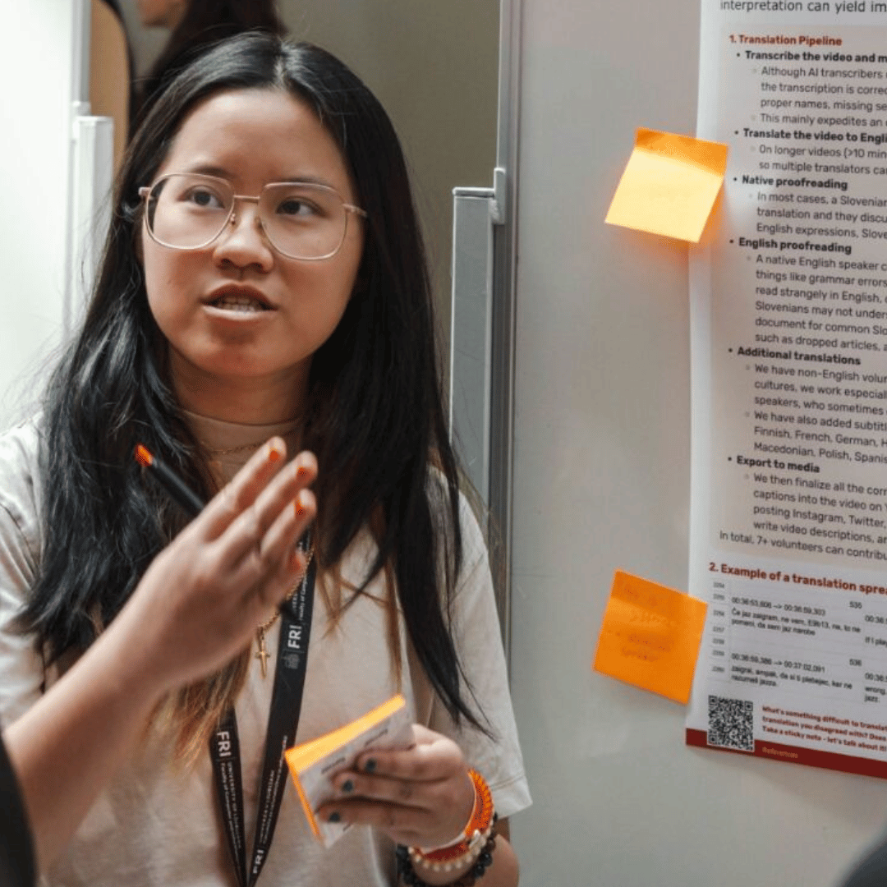
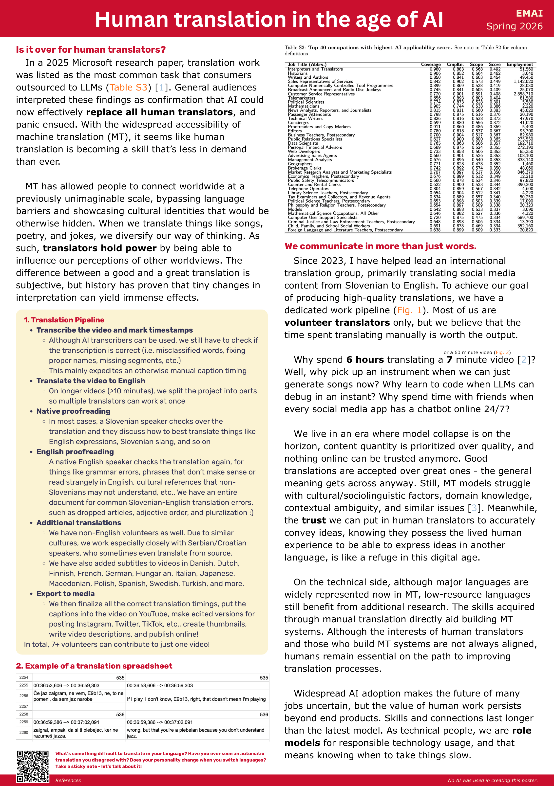

Originally presented at the EMAI Spring Event 2026, Ljubljana. Thumbnail by Anooj S.
In a 2025 Microsoft research paper, translation work was listed as the most common task that consumers outsourced to LLMs (Table S3) [1]. General audiences interpreted these findings as confirmation that AI could now effectively replace all human translators, and panic ensued. With the widespread accessibility of machine translation (MT), it seems like human translation is becoming a skill that’s less in demand than ever.
MT has allowed people to connect worldwide at a previously unimaginable scale, bypassing language barriers and showcasing cultural identities that would be otherwise hidden. When we translate things like songs, poetry, and jokes, we diversify our way of thinking. As such, translators hold power by being able to influence our perceptions of other worldviews. The difference between a good and a great translation is subjective, but history has proven that tiny changes in interpretation can yield immense effects.
Since 2023, I have helped lead an international translation group, primarily translating social media content from Slovenian to English. To achieve our goal of producing high-quality translations, we have a dedicated work pipeline (Fig. 1). Most of us are volunteer translators only, but we believe that the time spent translating manually is worth the output.
Why spend 6 hours translating a 7 minute video [2]?
Well, why pick up an instrument when we can just generate songs now? Why learn to code when LLMs can debug in an instant? Why spend time with friends when every social media app has a chatbot online 24/7?
We live in an era where model collapse is on the horizon, content quantity is prioritized over quality, and nothing online can be trusted anymore. Good translations are accepted over great ones - the general meaning gets across anyway. Still, MT models struggle with cultural/sociolinguistic factors, domain knowledge, contextual ambiguity, and similar issues [3]. Meanwhile, the trust we can put in human translators to accurately convey ideas, knowing they possess the lived human experience to be able to express ideas in another language, is like a refuge in this digital age.
On the technical side, although major languages are widely represented now in MT, low-resource languages still benefit from additional research. The skills acquired through manual translation directly aid building MT systems. Although the interests of human translators and those who build MT systems are not always aligned, humans remain essential on the path to improving translation processes.
Widespread AI adoption makes the future of many jobs uncertain, but the value of human work persists beyond end products. Skills and connections last longer than the latest model. As technical people, we are role models for responsible technology usage, and that means knowing when to take things slow.
This was originally supposed to be a 3-slide oral presentation, so it is a very condensed version of my thoughts on MT as someone with experience in amateur translation
